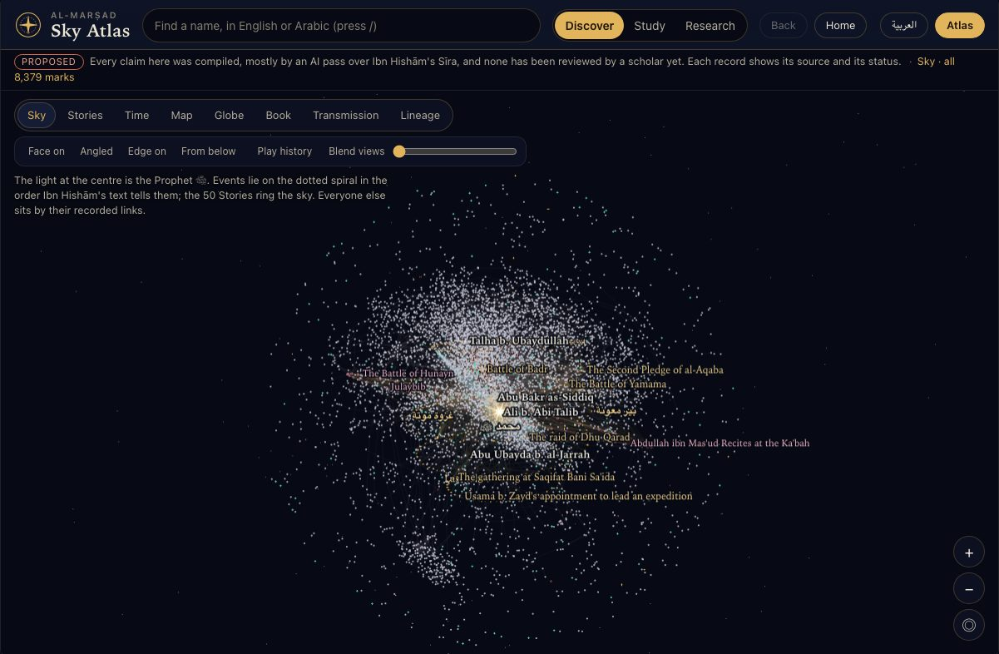
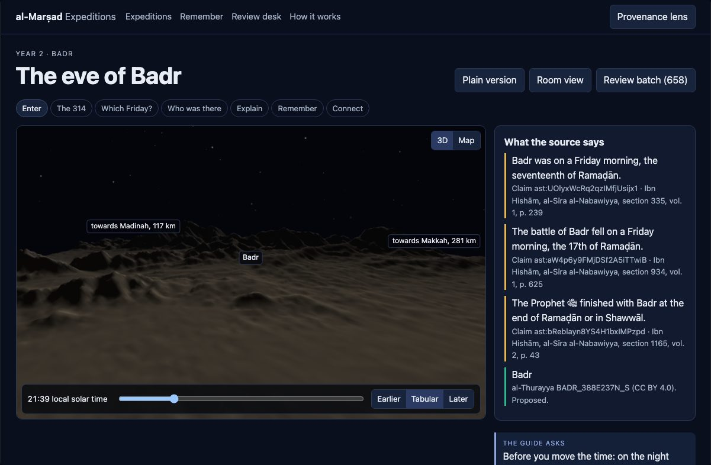

بسم الله الرحمن الرحيم
al-Marṣad المرصد
A map of the Sīra of the Prophet ﷺ : it shows where each report comes from, and leaves every ruling to scholars.
Presented by
On honorifics: on these screens we write رضي الله عنه or رضي الله عنها at the first mention of a Companion. In the data itself, a Companion’s honorific waits until a scholar has accepted the claim of companionship. We would value your guidance on this convention.
Why al-Marṣad
لماذا المرصد؟
The Sīra of the Prophet ﷺ is reported across many books, by many narrators.
A reader cannot easily see where each statement comes from, how it was carried, or where reports differ.
al-Marṣad shows where each statement comes from, and leaves every ruling to scholars.
Where it comes from
A statement from Ibn Hishām’s Sīra carries its volume and page, and its line in the digital text.
How it was carried
Where the text gives a chain of narrators, it is recorded link by link: chains so far.
Where reports differ
Each report is kept with its own source. The software never chooses between them.
What al-Marṣad will not do
- Depict the Prophet ﷺ, his family, the Companions, or any person.
- Give a ruling or a fatwa.
- Let software grade the authenticity of a report.
- Show a contested matter as settled.
- Close itself off: everything stays open to check, copy and correct.
How it is made: one maintainer, with AI help. The statements were drawn from the text with AI help, and every one stays “proposed” until a scholar accepts it.
The sky of the Sīra
سماء السيرة

Showing a still picture. Press S for the live view.
In this sky, we show the Prophet ﷺ as the light at the centre, and each person in the record as a star. A star’s brightness shows only the generation the record gives; it never ranks anyone.
marks: name records (not yet de-duplicated), events, places, stories and groups. Every statement is marked proposed.
Badr
بدر

Showing a still picture. Press S for the live view.
In this expedition, we show the night sky over Badr as astronomy computes it, beside the date the text gives. Where the two disagree, we ask a scholar; we do not correct the text.
The text: “” (). Under our crescent rule, none of the candidate days is a Friday. The rule is a simple stand-in for sighting the crescent, and we would ask a scholar to replace it. 313 in the well-known report, 314 in Ibn Isḥāq’s list.
Where a report comes from
من أين جاء الخبر؟
The date of Badr appears earlier in the book too, this time with a chain. Here is that one statement, end to end.
-
The statement
-
The source and page
-
The chain, as the text gives it
Abū Jaʿfar Muḥammad b. ʿAlī b. Ḥusayn رحمه الله told by hearing () Ibn Isḥāq رحمه الله in the recension of Ibn Hishām رحمه الله
-
Its status
. Whether the chain is connected, and what the report is worth, is for a scholar to determine. The software records the chain as the text gives it, and does not grade.
-
Who may rule
Only a scholar can accept it, reject it, or send it for discussion, and every decision is recorded. Software never accepts a claim on its own.
What is built, what waits
ما بُني وما ينتظر
statements reviewed by a scholar so far.
Built
- marks in the sky: name records, events, places, stories, groups.
- statements, every one proposed. of them are lines of descent.
- chains of narration recorded link by link.
- Expeditions: Badr, Uḥud, the Hijra, ʿAqaba and Abyssinia, each with a halaqa room.
- A review queue: statements in batches.
- A pilot pack, ready to send: statements and the first identity questions.
Waits
- identity questions (“is this the same person?”) and proposed merges of name records.
- of events have a date; of places have a location.
- A review board, and the tradition it declares.
- A scholar’s first decision.
What we hope for
ما نرجوه
-
A first review
That one scholar reviews the pilot pack, statements and the first identity questions, by a date you choose. We suggest Sunday 1 November.
-
Your guidance on direction
- On public pages that carry no review language, should each statement still show its source line?
- Who classifies opponents and conversions, and how should the hard cases be shown: Abū Ṭālib, the munāfiqūn such as ʿAbd Allāh b. Ubayy, the Jewish clans of Madinah, people whose Islam is disputed, and anyone with no recorded date of accepting Islam?
- Which tradition the first review board declares. Our draft: .
- The convention for the honorifics of the Companions.
-
Your advice on a home
On a custodian for al-Marṣad, and on funding.
Publicly, decisions are credited to the review board, not to a reviewer by name, unless the reviewer agrees to be named later.
Thank you.
جزاكم الله خيراً
A one-page summary is printed for you.